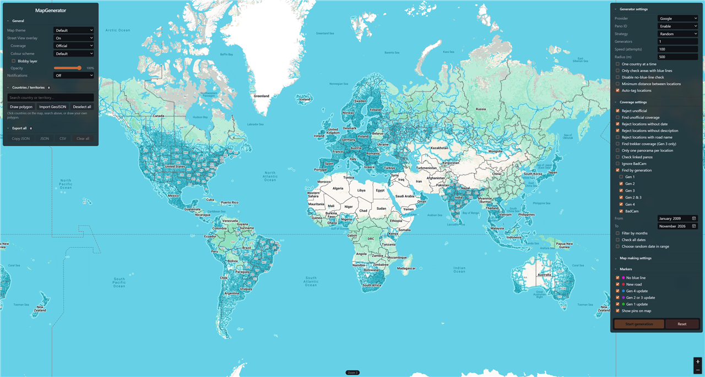

What it does
Select areas
Click countries on the map, search the list, or draw and import polygons.
Generate locations
Random or grid sampling across fourteen providers, with a goal per area.
Filter
Camera generation, blue lines, road type, dates, altitude, links, descriptions, authors.
Export
Copy or save locations as JSON or CSV. Click a pin to open its panorama.
Coverage overlays
See where street view exists, with blue-line overlays and several colour schemes.
Keeps up to date
Checks for new versions on its own. Settings and polygons are remembered.
Performance
Generation runs in a native Rust backend with parallel sampling: around four times faster than the browser version with the same settings, while using noticeably less RAM. The UI is a thin webview, so the app stays lightweight.
| Scenario | Map Generator | Browser | Speedup |
|---|---|---|---|
| Default filters (random) | 0.8 s | 3.0 s | 3.8× |
| Gen 4 only | 1.3 s | 5.5 s | 4.2× |
| No generation filter | 0.9 s | 4.1 s | 4.6× |
Google provider, Estonia, 5 generators × 1000 attempts, target of 300 locations; median of 3–5 runs on the same machine and network. The Rust side pools a single HTTP/2 client (capped at 128 concurrent requests), skips sea samples locally with a 140 KiB land mask, and drops the redundant second Google request. The browser version issues one request per sample with no local land check.
Providers
Google Street View, Apple Look Around, Yandex, Bing Streetside, Naver, Kakao, Baidu, Tencent, Mapillary, Mapy.cz, ASIG, Já360, Vegbilder, OpenMap.